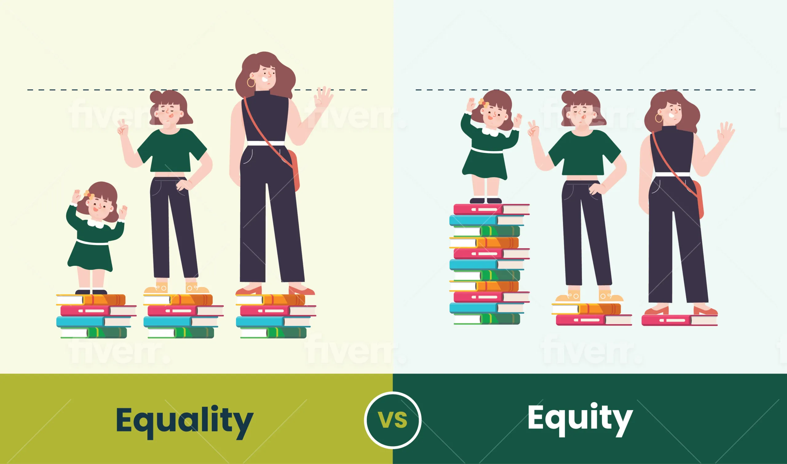
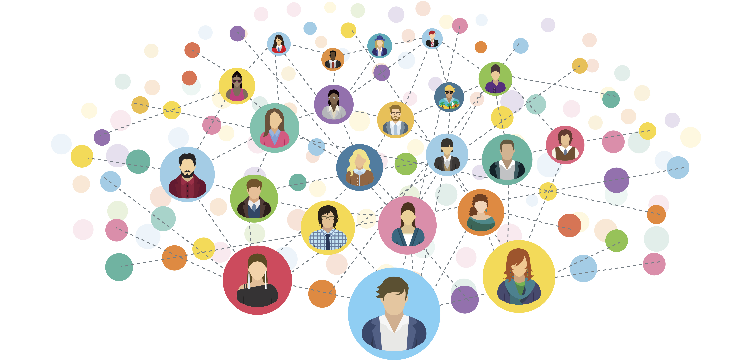
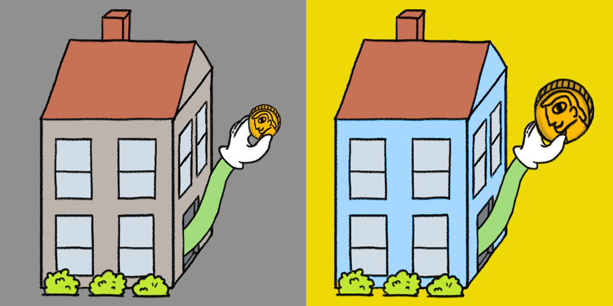

4 Things You Need to Know About Educational Inequity
Be an expert by the end of reading this article and know how you can help.
By Christy Nguyen
Growing up, the education offered was reflective of what our neighborhood could afford. Overcrowded classrooms led to less personalized instruction, and teachers sometimes didn’t show up, leaving us to complete worksheets and memorize formulas on our own. When I came to a private high school, there was an abundance of student-support resources and project-based learning. Now that I've experienced both sides of the spectrum, I wanted to know what created these inequalities, so I landed on systemic educational inequity. Read on to learn more and how you, as an individual, can take steps to tackle it…
1. Equality vs Inequity
Equality means that every individual or group of people are given the exact same, or equal, quality and number of resources and opportunities. In an education context, that means every school will receive the same number of teachers, textbooks, and other educational resources. Equity is when the number of resources and opportunities are properly allocated to meet each person or group's circumstances. In a school context, this may look like giving a historically underserved community's school increased special education specialists or more opportunities to learn project-based learning
2. Educational Inequity is Systemic
There are ample examples as to how the system is unjust. In schools with predominantly students of color, there are more likely to have novice teachers, lower quality textbooks, receive less rigorous feedback on their work, and have less advanced courses available. My sister has firsthand experience in this where she was enrolled in our neighborhood public high school and it was not uncommon to have teachers drop out and AP classes be removed because there weren't enough resources to offer them.
3. How Taxes Contribute to Inequities
Public schools are funded by local property taxes, so low-income areas have lower home values and contribute less taxes towards their local schools. In high-income areas, the exact opposite occurs. This creates an inequitably distributed funding system, where there is less resources per-pupil. This creates a hard-to-break cycle because to solve this, there needs to be a drastic change in policy.
4. Sourcing Programs that Combat This
As someone who's grown up in an underfunded school district, I met people who led me to achieving the quality education everyone deserves. One important thing I recognized that helped me achieve this is through outside-of-the-classroom activities such as summer internships, programs, and apprenticeships. (Tip: Keep an eye out for ones that serve students of disadvantaged backgrounds!) Some examples would be: